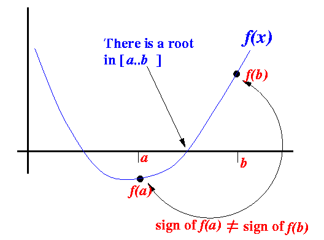
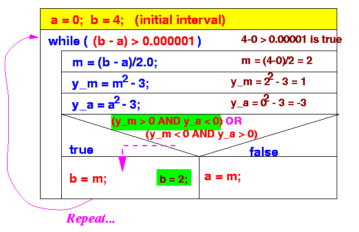

- Bisection Method:
- Bisection Method = a numerical method in Mathematics to find a root of a given function
- Root of a function:
- Root of a function f(x) =
a value a such that:
- f(a) = 0
Example:
Function: f(x) = x2 - 4 Roots: x = -2, x = 2 Because: f(-2) = (-2)2 - 4 = 4 - 4 = 0 f(2) = (2)2 - 4 = 4 - 4 = 0 - Root of a function f(x) =
a value a such that:
- Well-known Mathematical Property:
- If a function f(x) is
continuous on
the interval [a..b] and
sign of f(a)
≠
sign of f(b), then:
- There is a value
c ∈ [a..b]
such that:
f(c) = 0
I.e., there is a root c in the interval [a..b]
Example:
 - There is a value
c ∈ [a..b]
such that:
f(c) = 0
- If a function f(x) is
continuous on
the interval [a..b] and
sign of f(a)
≠
sign of f(b), then:
- The Bisection Method is a
successive approximation method
that narrows down an
interval that contains
a root of the function f(x)
- The Bisection Method is
given an
initial interval [a..b]
that contains a root
(We can use the property sign of f(a) ≠ sign of f(b) to find such an initial interval)
- The Bisection Method will
cut the interval into
2 halves and
check which half interval contains
a root of the function
- The Bisection Method will
keep cut the interval in halves
until the resulting interval is
extremely small
The root is then approximately equal to any value in the final (very small) interval.
- Example:
- Suppose the
interval [a..b]
is as follows:
- We cut the
interval [a..b]
in the middle:
m = (a+b)/2
- Because
sign of f(m) ≠ sign of f(a)
, we
proceed with the
search in the
new interval
[a..b]:
We can use this statement to change to the new interval:
b = m;
- Suppose the
interval [a..b]
is as follows:
- In the above example, we have
changed the end point b
to obtain a smaller interval
that still contains a root
In other cases, we may need to changed the end point b to obtain a smaller interval that still contains a root
Here is an example where you have to change the end point a:
- Initial interval [a..b]:
- After cutting the interval in
half, the
root is contained in the
right-half, so
we have to
change the end point a:
- Initial interval [a..b]:
- Example: find the root of
f(x) = x2 − 5
between [0, 4]
There is a root between [0,4] because:: f(0) = 02 − 5 = −5 f(4) = 42 − 5 = 11 Start: a = 0; f(a) = -5 b = 4; f(b) = 11 Iteration 1: m = (a + b)/2 = 2 f(m) = 22 − 5 = -1 Because f(m) < 0, we replace a with m a = 2; f(a) = -1 b = 4; f(b) = 11 Iteration 2: m = (a + b)/2 = 3 f(m) = 32 − 5 = 4 Because f(m) > 0, we replace b with m a = 2; f(a) = -1 b = 3; f(b) = 4 Iteration 3: m = (a + b)/2 = 2.5 f(m) = 2.52 − 5 = 1.25 Because f(m) > 0, we replace b with m a = 2; f(a) = -1 b = 2.5; f(b) = 1.25 And so on....
- Rough description (pseudo code) of the Bisection Method:
Given: interval [a..b] such that: sign of f(a) ≠ sign of f(b)
repeat (until the interval [a..b] is "very small") { a+b m = -----; // m = midpoint of interval [a..b] 2 if ( sign of f(m) ≠ sign of f(b) ) { use interval [m..b] in the next iteration (i.e.: replace a with m) } else { use interval [a..m] in the next iteration (i.e.: replace b with m) } } Approximate root = (a+b)/2; (any point between [a..b] will do because the interval [a..b] is very small)Re-writing the pseudo code in term of a while-statement:
Given: interval [a..b] such that: sign of f(a) ≠ sign of f(b)
while (interval [a..b] is NOT "very small") { a+b m = -----; // m = midpoint of interval [a..b] 2 if ( sign of f(m) ≠ sign of f(b) ) { use interval [m..b] in the next iteration (i.e.: replace a with m) } else { use interval [a..m] in the next iteration (i.e.: replace b with m) } } Approximate root = (a+b)/2; (any point between [a..b] will do because the interval [a..b] is very small)
- Structure Diagram of the Bisection Algorithm:
- Example execution:
- We will use a simple function
to illustrate the
execution of the
Bisection Method
- Function used:
f(x) = x2 - 3Roots: √3 = 1.7320508... and −√3 = −1.7320508...
- We will use the
starting interval [0..4] since:
- f(0) = 02 − 3 = −3
- f(4) = 42 − 3 = 13
The interval [0..4] contains a root because: sign of f(0) ≠ sign of f(4)
Steps taken by the Bisection Method:
- Iteration 1:
 New interval: [0..2] (it contains √3 = 1.7320508.. !!!)
- Iteration 2:
New interval: [1..2] (it contains √3 = 1.7320508.. !!!)
- Iteration 3:
New interval: [1.5 .. 2] (it contains √3 = 1.7320508.. !!!)
- And so on !!
Result:
- The interval gets
smaller and smaller
- But it will always contain the
root √3
- When the interval is smaller than
0.000001,
the while-loop will
exit
At that moment, the end points of the interval will be very close to root √3
- The interval gets
smaller and smaller
- We will use a simple function
to illustrate the
execution of the
Bisection Method
- Java program:
// Bisection Method - Solves: x^2 - 3 = 0 public class Bisection01 { public static void main(String[] args) { final double epsilon = 0.00001; double a, b, m, y_m, y_a; a = 0; b = 4; while ( (b-a) > epsilon ) { m = (a+b)/2; // Mid point y_m = m*m - 3.0; // y_m = f(m) y_a = a*a - 3.0; // y_a = f(a) if ( (y_m > 0 && y_a < 0) || (y_m < 0 && y_a > 0) ) { // f(a) and f(m) have different signs: move b b = m; } else { // f(a) and f(m) have same signs: move a a = m; } System.out.println("New interval: [" + a + " .. " + b + "]"); // Print progress } System.out.println("Approximate solution = " + (a+b)/2 ); } }Output:
Initial interval: [0.0 .. 4.0] New interval: [0.0 .. 2.0] (We did the first 3 by hand above) New interval: [1.0 .. 2.0] New interval: [1.5 .. 2.0] New interval: [1.5 .. 1.75] New interval: [1.625 .. 1.75] New interval: [1.6875 .. 1.75] New interval: [1.71875 .. 1.75] New interval: [1.71875 .. 1.734375] New interval: [1.7265625 .. 1.734375] New interval: [1.73046875 .. 1.734375] New interval: [1.73046875 .. 1.732421875] New interval: [1.7314453125 .. 1.732421875] New interval: [1.73193359375 .. 1.732421875] New interval: [1.73193359375 .. 1.732177734375] New interval: [1.73193359375 .. 1.7320556640625] New interval: [1.73199462890625 .. 1.7320556640625] New interval: [1.732025146484375 .. 1.7320556640625] New interval: [1.7320404052734375 .. 1.7320556640625] New interval: [1.7320480346679688 .. 1.7320556640625] Approximate solution = 1.7320518493652344
- Example Program:
(Demo above code)

- Prog file: click here
How to run the program:
- Right click on link and
save in a scratch directory
- To compile: javac Bisection01.java
- To run: java Bisection01
- Suppose we want to find the root
of
f(x) = x3 + x - 3in the interval [0..4]
- Changes to the
Java program:
// Solves: x^3 + x - 3 = 0 public class Bisection02 { public static void main(String[] args) { final double epsilon = 0.00001; double a, b, m, y_m, y_a; a = 0; b = 4; while ( (b-a) > epsilon ) { m = (a+b)/2; // Mid point y_m = m*m*m + m - 3.0; // y_m = f(m) y_a = a*a*a + a - 3.0; // y_a = f(a) if ( (y_m > 0 && y_a < 0) || (y_m < 0 && y_a > 0) ) { // f(a) and f(m) have different signs: move b b = m; } else { // f(a) and f(m) have same signs: move a a = m; } System.out.println("New interval: [" + a + " .. " + b + "]"); } System.out.println("Approximate solution = " + (a+b)/2 ); } }
- Example Program:
(Demo above code)
- Prog file: click here
How to run the program:
- Right click on link and
save in a scratch directory
- To compile: javac Bisection02.java
- To run: java Bisection02
- We had to change the
body of the Java program to
find the root of
a different function
This is very inconvenient
- It would be more convenient
to if we can write:
y_m = f(m); y_a = f(a);
When we solve a different function, we make changes to the function definition f()
This is indeed possible in Java...
However, we have not study user-defined methods yet.
But we will get there very soon.